장면 1처음 설치와 저장 폴더
언제 쓰나요 — 회사 PC·맥에 처음 설치할 때, 또는 PC를 바꿔 일지를 옮길 때.
설치 — Windows
- 최신 판 내려받기 ↗에서
WorkJourneyBoard_<판>_setup.exe를 받아 실행합니다. - 관리자 권한 없이 내 계정에만 설치됩니다.
설치 — macOS
- 최신 판 내려받기 ↗에서
WorkJourneyBoard_<판>_mac.dmg를 받아 엽니다. - 앱 아이콘을 응용 프로그램 폴더로 끌어 놓습니다.
- 처음 열면 "'Work Journey Board'을(를) 열지 않음" 창이 뜹니다 — 애플 개발자 서명이 없는 앱이라 macOS가 막는 것으로, 창에는 [휴지통으로 이동]·[완료]만 있습니다. 아래 순서로 처음 한 번만 허용합니다.
- 창에서 [완료]를 누릅니다.
- 시스템 설정 › 개인정보 보호 및 보안을 열고 맨 아래 보안 칸으로 내립니다.
- "'Work Journey Board'이(가) 차단되었습니다" 옆 [그래도 열기] → 암호(또는 Touch ID).
- 앱을 다시 열고, 한 번 더 뜨는 창에서 [그래도 열기]를 누릅니다.
- 앱 안에서 받은 새 판은 다시 묻지 않습니다.
처음 켤 때
- 저장 폴더를 고릅니다. 추천 위치는 홈 폴더의
WorkJourney(WindowsC:\Users\<사용자>\WorkJourney· macOS~/WorkJourney)입니다 — OneDrive·iCloud 같은 동기화 폴더는 안내가 뜹니다. - 기존 일지가 있으면 기존 일지 열기로 그 폴더를 고릅니다(
work-journey.db파일 하나가 일지 전체). - 보드가 뜨면
+ 업무 추가에 지금 하고 있는 업무 이름을 적고Enter.
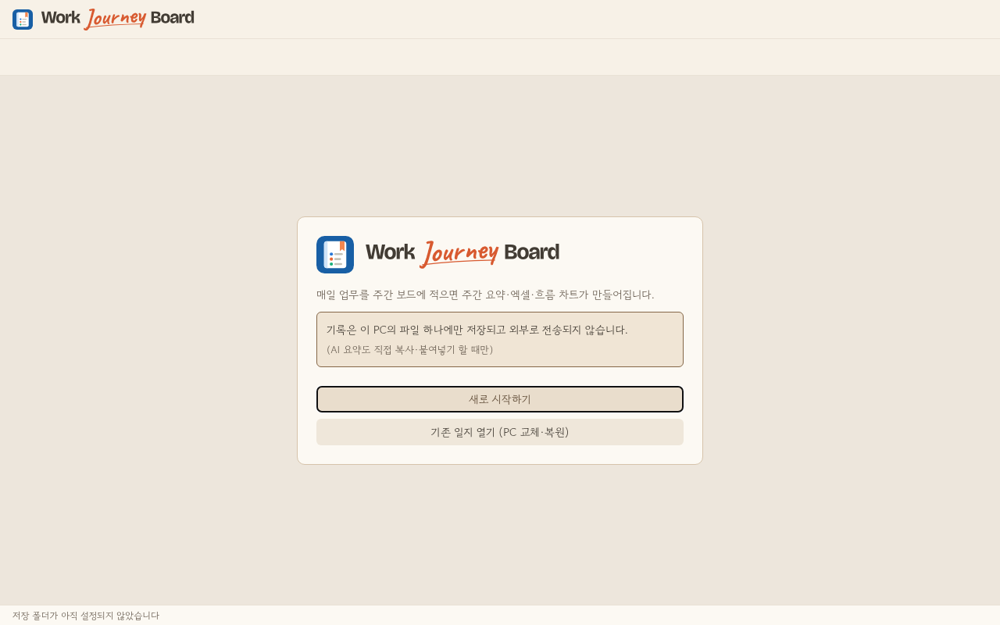
팁
- 일지는 고른 폴더의 SQLite 파일 하나뿐이고, 앱은 기록을 어디에도 보내지 않습니다.
- Windows와 macOS는 같은 판·같은 기능입니다. 이 가이드의 단축키는 Windows 표기 옆 괄호에 맥 표기를 함께 적었습니다(예:
Alt+1(⌥1)). → 부록 - 저장 위치는 나중에 설정 › 데이터·백업 › 저장 위치에서 옮길 수 있습니다. → 12. 백업과 복원
장면 2매일 2분 기록(키보드)
언제 쓰나요 — 하루를 마치며(또는 틈틈이) 오늘 한 일을 업무별로 적을 때.
- 앱을 켜면 오늘 칸에 커서가 있습니다. 바로 적고
Enter= 다음 항목,Tab= 세부 항목,Shift+Tab(⇧⇥) = 본 항목. - 칸의 첫·끝 줄에서
↑/↓= 위·아래 업무 칸,Esc= 편집 끝. 입력을 멈추면 0.5초 뒤 자동 저장(위쪽저장됨 ✓). - 지난 요일·다른 주는
Alt+←(⌥←)/Alt+→(⌥→)(주 이동), [오늘]로 돌아오기. 하루만 크게 보려면Alt+V(⌥V) = 데일리 뷰. - 붙여 넣으면 줄마다 항목으로 나뉘고, 들여 쓴 줄은 세부 항목이 됩니다.

팁
- 새 업무는 상단의 아이콘이 붙은 업무 추가에서 만듭니다. 팝업에 업무 이름을 입력하고 기존 태그를 고르거나 새 태그를 추가합니다(태그는 선택). 업무 추가는 만들고 닫기, 추가하고 계속은 태그를 유지하며 연속 입력입니다. 취소하면 새 태그도 저장하지 않습니다.
- 주간 업무의 마지막 행 아래에 메모 경계가 바로 닿습니다. 경계를 끌어 높이를 조절하거나, 경계에 포커스한 뒤
↑/↓로 조절하고Home으로 자동 높이로 돌아갑니다. - 데일리 뷰의 업무 카드는 왼쪽의 직선 색상 띠로 구분합니다. 업무별 색상은 주간 보드와 같습니다.
- 실수는
Ctrl+Z(⌘Z)/Ctrl+Y(⌘Y)(50단계), 항목 지우기는Alt+Delete(⌥⌦) 또는 항목 메뉴 [삭제](토스트 [되돌리기]). - 그날까지 끝내야 하는 일은
Alt+U(⌥U)(항목 메뉴 ⏳ 마감일…) → 빠른 단추·달력·숫자(1026)로 마감일을 정합니다. 항목 오른쪽 아래에⏳ 10/26(월) D-4가 붙고(지나면 빨강2일 지남, 당일은오늘 마감), ★ 중요 표시도 함께 켜집니다. 꼬리표를 누르면 바꾸거나 지웁니다. - 회의처럼 시작 시각이 있는 항목은
Alt+O(⌥O)(또는 항목 메뉴 — 아래 ⋮⋮ 참고) → 시·분(15분 단위) 고르기. 항목 앞에⏰ 10:00이 붙고, 누르면 바꾸거나 지웁니다. - 할 일을 다른 날로 옮기려면
Alt+D(⌥D) — 다음 주·이전 주 같은 요일·내일·달력에서 고른 날로, 세부 항목까지 함께 갑니다(알림의 [그 날로 가기]·[되돌리기]). - 항목에 마우스를 올리면 왼쪽에 ⋮⋮ 손잡이가 나옵니다 — 끌면 순서를 바꾸거나 다른 요일·업무 칸으로 옮기고(
Alt+↑(⌥↑)/Alt+↓(⌥↓)도 같음), 누르면 항목 메뉴: 연결된 메모 만들기·매주 반복·시작 시각·다른 날로 옮기기·삭제. 항목을 오른쪽 클릭해도 같은 메뉴입니다. - 업무·요일 열 폭은 열 머리 오른쪽 끝을 끌어 바꿉니다(두 번 누르면 자동 폭, 주를 넘겨도 유지).
- 주소(
https://…)는 링크가 되고Ctrl+클릭(⌘+클릭)으로 기본 브라우저에서 열립니다. - 업무 이름 옆 🗄(숫자)는 그 업무에 연결된 Cabinet 폴더·링크입니다 — 누르면 바로 엽니다. → 11. Cabinet
- 항목마다 체크 사각형 아이콘으로 완료, 되돌림 화살표 아이콘으로 완료 취소합니다. 완료 본문에만 취소선이 표시되고 글 내용은 그대로 남습니다. 완료 취소는 완료 전 별표 상태를 복원합니다. 중요 업무 패널에서 완료한 항목도 같은 상태로 표시됩니다.
- 강조 띠·별표·완료 아이콘의 공간을 기본으로 비워 두어 별표를 켜도 본문 시작점이 움직이지 않습니다. 모든 강조 띠는 직각입니다.
- 완료/취소 조작 아이콘은 해당 행에 마우스를 올리거나 키보드로 접근하면 표시됩니다. 완료 상태 배지와 취소선은 항상 보입니다. 작은 창에서 업무 내용이 길면 보드만 스크롤하고 메모는 최소 높이를 유지합니다.
장면 3직전 기록 가져오기·매주 반복
언제 쓰나요 — 어제 하던 일이 오늘도 이어질 때, 매주 같은 요일에 하는 일이 있을 때.
- 빈 칸에 보이는
[10/20(화) 내역 가져오기 Alt+P]([10/20(화) 내역 가져오기 ⌥P])를 누르거나Alt+P(⌥P) — 그 업무의 직전 기록일 내역이 이 칸 끝에 들어옵니다(같은 내용은 건너뜀). - 모든 업무를 한꺼번에:
Alt+Shift+P(⌥⇧P)(요일 머리 ⋯ 메뉴도 같음) — 되돌리기 한 번이면 원래대로. - 매주 반복할 항목에서
Alt+R(⌥R)(또는 항목 ⋮⋮ 메뉴 [매주 반복 켜기]) — 켜진 항목 끝에 ↻가 보이고, 누르면 끕니다 · 다음 주 같은 요일에 미리 보이고, 그 주를 열면 자동으로 만들어집니다.
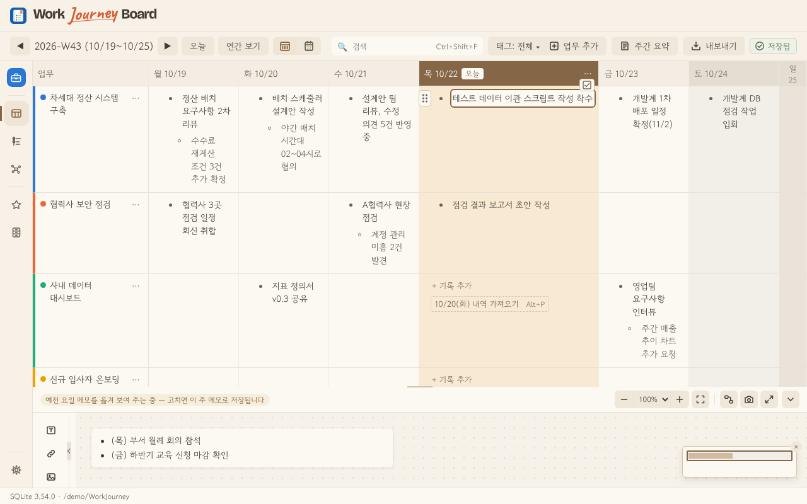
팁
- 하루 종일 쉬는 날(연차·공휴일·기타 휴가)은 직전 기록일 찾기에서 건너뜁니다. → 10. 휴일·휴가
- 반복 규칙 목록·끄기는 설정 › 업무 관리 › 매주 반복.
- 완료된 항목은 가져오지 않습니다. 완료된 상위 항목은 그 아래 미완료 하위 항목까지 함께 제외하고, 미완료 상위 항목 아래 완료된 하위 항목만 있으면 그 하위 항목만 제외합니다.
- 직전 기록이 전부 완료면 가져오기 버튼이 비활성화되고 이유를 안내합니다. 더 오래된 날로 자동으로 거슬러 가지 않습니다. 완료를 취소하면 다시 가져오기 대상에 포함됩니다.
장면 4중요 업무 챙기기
언제 쓰나요 — 마감이 있거나 놓치면 안 되는 일을 따로 모아 볼 때.
- 항목에서
Alt+I(⌥I)(또는 개조 부호 ☆ 누르기) — 노란 바탕과 ★로 강조됩니다. 마감일(Alt+U(⌥U))을 정하면 ★도 함께 켜집니다. - 왼쪽 레일 ★ 또는
Alt+2(⌥2) = 중요 업무 패널: 맨 위 ⏳ 마감일이 있는 업무(마감일마다2일 지남·오늘 마감·D-4머리줄로 묶여 임박순 — 줄에는 항목명만, 업무는 색 점·마우스를 올리면 업무 이름) 아래로 지난 날짜·오늘·이번 주·다음 주 이후로 묶여 보입니다 — 오늘 묶음은 따로 칠한 바탕으로 한눈에(지난 날짜나 마감이 지난 항목이 있으면 레일에 빨간 점). - 끝낸 일은 패널에서
Space(또는 ✓) = 처리 완료 — 보드 항목에 완료 뱃지가 남고, 아래 "이 주 완료"에 모입니다.
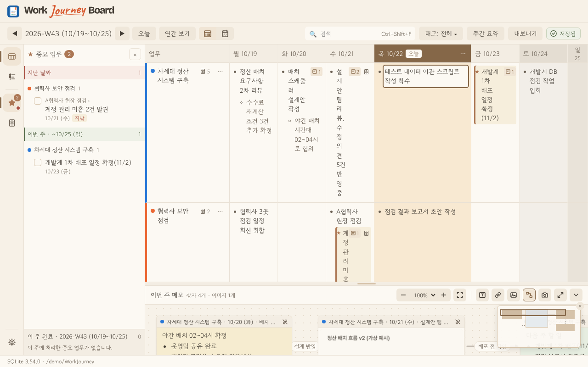
팁
- 마감일 머리줄은 D-day 컬러칩 + 날짜로 표시하며 날짜별 개수는 표시하지 않습니다. 지남은 빨강, 오늘은 주황, 1~7일은 옅은 주황, 8일 이상은 중립색입니다. 색과 함께
2일 지남·오늘 마감·D-4글자를 표시합니다. - 중요 항목의 강조선과 오늘·마감일 묶음의 왼쪽 띠는 끝이 평평한 직선으로 표시됩니다. 기존 상태별 색상은 그대로입니다.
- 패널 폭은 가장자리를 끌어 바꾸고, 두 번 누르면 기본 폭으로 돌아옵니다.
- 패널 항목
Enter= 그 주·그 칸으로 이동. - 시작 시각(
⏰ 10:00)이 있는 항목은 패널에도 시각이 보이고, 같은 날 안에서 시각 순으로 놓입니다. - 마감일을 지워도 ★는 남고, ★를 꺼도 마감일 꼬리표는 남습니다(패널에서만 빠짐). 마감 묶음에 든 항목은 아래 날짜 묶음에 다시 나오지 않습니다.
- ★ 항목을 다른 날로 옮기면(
Alt+D(⌥D)) 패널에서도 새 날짜 묶음으로 바로 옮겨 갑니다.
- 패널에서 완료 처리하면 보드·데일리 본문에 취소선과 완료 배지가 표시됩니다. 항목의 되돌림 화살표로 바로 완료를 취소할 수 있습니다. 완료 전 중요 항목은 별표도 복원됩니다. 일반 항목을 완료했다 취소한 경우에는 별표가 생기지 않습니다.
장면 5메모 보드로 맥락 남기기
언제 쓰나요 — 항목 한 줄로는 부족한 배경·결정·그림을 그 주에 함께 남길 때.
- 보드 아래 이번 주 메모의 빈 곳을 누르면 글 상자가 생깁니다. 서식·체크 목록·링크를 쓸 수 있습니다.
- 항목의 ⋮⋮ 메뉴(또는 오른쪽 클릭)에서 [이 항목과 연결된 메모 만들기]를 누르면 그 항목과 연결된 메모가 생기고, 항목 옆에 메모 수 배지가 붙습니다(항목을 상자에 끌어 놓아도 연결).
- 그림은 붙여 넣기·끌어 놓기로 이미지 상자, 주소는 링크 카드로.
- 상자 가장자리의 연결점을 끌어 다른 상자에 놓으면 관계선 — 이름표·화살표·점선을 고릅니다.
- 빈 곳을 끌면 선택 사각형 — 걸친 상자를 함께 고릅니다. 선택한 텍스트·이미지·링크 카드 어디든 끌면 전체가 함께 이동합니다. 클릭은 선택 유지, 더블클릭은 개별 편집/이미지 보기입니다.
- 직각 점선 외곽의 N개 선택 · 함께 이동도 보조 손잡이로 쓸 수 있습니다. 방향키·
Delete(⌫)는 함께 적용하고, 이동 중Esc는 원복, 이동 전Esc나 빈 곳 클릭은 선택만 해제합니다.Shift+상자로 추가/제외합니다.
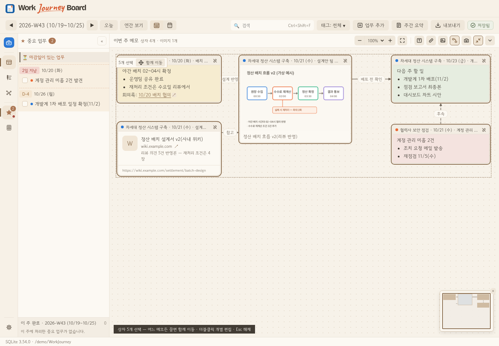
팁
- 글자를 선택하고 서식 막대의 A 글자색을 누르면 기본·회색·주황·파랑·초록·빨강 팔레트가 열립니다. 선택한 글자만 바꾸고, 선택이 없으면 이후 입력에 적용합니다. 기본을 고르면 원래 색으로 돌아갑니다. 방향키로 색을 이동하고
Enter로 선택,Esc로 닫습니다. .md·.markdown파일을 메모 보드에 끌어 놓으면 파일마다 새 텍스트 메모가 생깁니다. 마크다운 서식 기호는 정리하고 글·코드는 남기며, 이미지·base64 첨부 데이터는 제외합니다. URL은 기존 링크 텍스트로 제공해Ctrl+클릭(⌘+클릭)·↗로 열 수 있습니다. 원본 파일과 기존 메모는 덮어쓰지 않습니다.- 마크다운은 UTF-8 파일, 파일당 최대 5MiB, 한 번에 10개까지 받습니다. 텍스트가 없는 파일은 건너뛰고 안내합니다. 생성 알림의 되돌리기는 그때 만든 메모만 취소합니다.
- 크게 보기(⤢)·줌·미니맵으로 넓은 판을 다룹니다. 지난 주 메모는 인사이트 타임라인에서 다시 볼 수 있습니다. → 8. 지난 일 돌아보기
- 메모 머리 카메라 메뉴: PNG 그림 저장·복사, 마크다운 내보내기. → 7. 내보내기
- 글자색 단추는 A + 직각 색상칩 + 펼침 화살표입니다. 색상칩을 펼쳐 원하는 색을 고르고, 첫 번째 기본색 복원 단추로 되돌립니다. 색상칩과 표시선에는 둥근 모서리를 쓰지 않습니다.
장면 6금요일 주간 보고 만들기
언제 쓰나요 — 한 주 기록을 보고용 글로 정리할 때.
- 위쪽 [주간 요약] — 이번 주 기록이 업무별 개조식으로 자동 정리됩니다(요일·세부 항목·휴가 표시 포함).
- 그대로 [복사]해 메일·메신저에 붙이거나, 패널에서 고쳐 쓴 글을 저장합니다(기록이 바뀌면 안내).
- AI로 다듬으려면 [AI 지시문 복사] → 쓰는 AI에 붙여 넣고, 받은 글을 다시 붙여 넣어 보관합니다(앱은 AI에 직접 접속하지 않음).
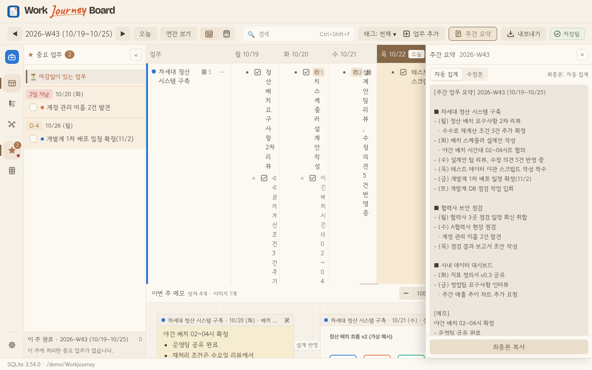
팁
- 업무가 많으면 태그 필터(위쪽 [태그: 전체 ▾])로 보고 대상만 골라 볼 수 있습니다.
장면 7엑셀·마크다운 내보내기
언제 쓰나요 — 월간·분기 보고, 다른 사람과 기록을 나눌 때.
- 엑셀: [내보내기] 또는
Alt+E(⌥E) → 기간(이번 주·최근 4주·기간 지정) → [저장…]. 주간보고 시트와 상세 기록이 들어가고, 원하면 메모 보드 스냅샷 시트도 넣습니다. - 마크다운: 메모 머리 카메라 메뉴 › [마크다운으로 내보내기…] → 범위·포함 항목을 고르고 미리본 뒤
.md(+ 이미지 폴더)로 저장하거나 복사합니다. - 저장이 끝나면 토스트의 [폴더 열기]·[파일 열기].
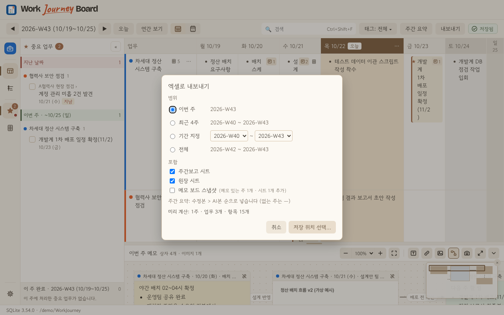
팁
- 내보낸 마크다운을 다시 메모 보드에 끌어 놓을 수 있습니다. 글과 링크만 새 텍스트 메모로 가져오며 이미지 폴더·첨부 데이터는 자동으로 읽지 않습니다. → 5. 메모 보드
- 저장은 고른 경로에만 하고, 일지 파일·
backups폴더에는 쓰지 않습니다.
장면 8지난 일 돌아보기(인사이트)
언제 쓰나요 — 한 업무가 어떻게 흘러왔는지, 언제 바빴는지 볼 때.
- 레일 인사이트 아이콘 또는
Alt+3(⌥3)(칸에 커서가 있으면 그 업무) — 경과 지도와 업무 타임라인이 열립니다. - 년/월 → 주차 → 상세 업무 순으로 읽습니다. 월 제목 아래와 주차 사이 구분선으로 경계를 구분합니다. 오른쪽 꺾쇠 아이콘으로 월 기록을 펼치거나 접습니다.
- 타임라인에서 주마다 항목·★·↻·연결 메모를 따라가고,
Enter= 보드의 그 칸으로.Ctrl+F(⌘F) 찾기,Ctrl+Shift+C(⇧⌘C) 경과 복사. - 활동 탭: 12주(일)·연간(주) 히트맵으로 업무별 기록 밀도를 봅니다.
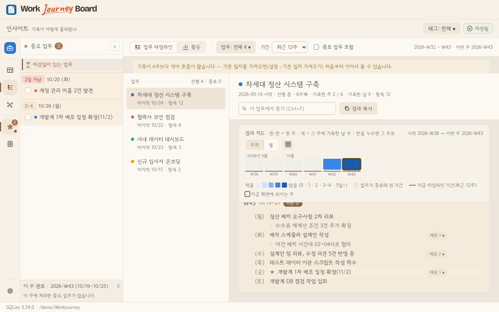
팁
- 업무 머리 ⋯ › [업무 타임라인 보기]로도 들어갑니다.
Alt+1(⌥1) = 보드로.
- 경과 지도는 항상 표시됩니다. 표 아이콘으로 표를 표시/닫으며, 버튼 위에 마우스를 올리면 이름을 확인할 수 있습니다.
- 업무 타임라인 / 활동 탭 앞에 각 기능의 모노그램 아이콘이 표시됩니다. 활동 격자는 창 너비에 맞춰 늘어나고, 좁으면 카드 안에서 가로 스크롤합니다. 업무 이름은 고정돼 날짜를 넘겨도 읽을 수 있습니다.
장면 9검색
언제 쓰나요 — "그거 언제 했더라?" 싶을 때.
- 위쪽 검색 칸 또는
Ctrl+Shift+F(⇧⌘F) → 낱말 입력(띄어 쓰면 모두 들어간 것) →Enter. - 오른쪽 결과 목록: 업무 기록·메모 보드(글·이미지 설명·링크 카드·관계선)·Cabinet 폴더/링크가 꼬리표와 함께. 누르면 그 칸·메모 상자로.
F3/Shift+F3(⇧F3) = 다음/이전 결과, 보드 위 노란 띠의 [검색 초기화]로 끝냅니다.
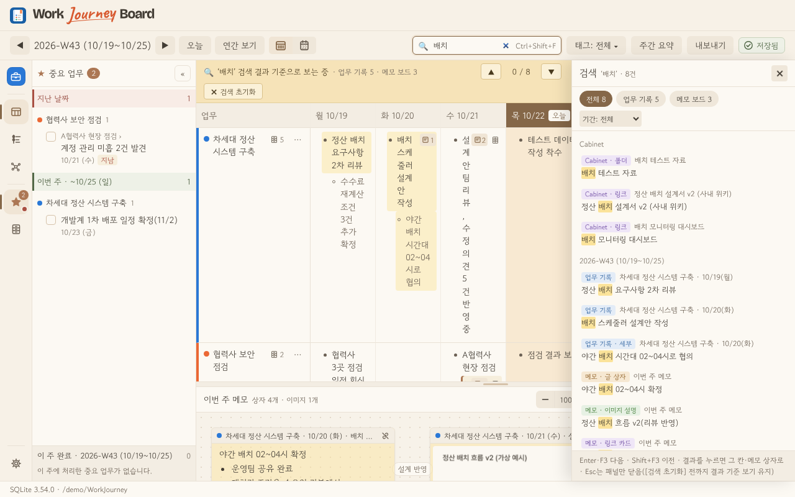
팁
- 기간(전체·올해·최근 12주)과 거르기(업무 기록·메모 보드)로 좁힙니다.
장면 10휴일·휴가
언제 쓰나요 — 연차·반차, 공휴일, 회사 휴일·공가 같은 쉬는 날을 표시할 때.
- 요일 머리 ⋯(데일리 뷰는 [근무 ▾]) → 연차·오전/오후 반차·공휴일(이름)·기타 휴가(사유). 사유는 칩(공가·야유회·경조사·교육·대체휴무)이나 직접 입력.
- 대한민국 공휴일(설·추석 연휴, 대체공휴일, 선거일)은 앱 안 표로 자동 표시됩니다(인터넷 접속 없음).
- 설정 › 달력·휴일: 자동 표시 켜기/끄기, 날짜별 끄기, 회사 휴일(매년·그 해만), 기타 휴가 사유 목록.
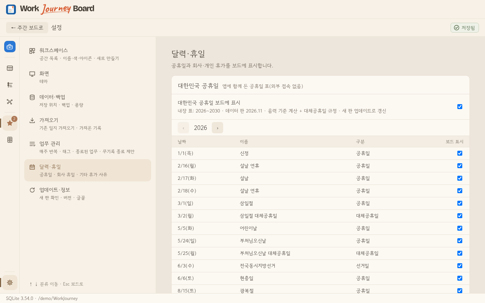
팁
- 공휴일인 날 근무했다면 그 날을 [근무]로 돌리세요 — 그 날 표시만 꺼집니다.
- 쉬는 날은 주간 요약 끝 줄·엑셀 날짜 머리에 이름이 들어가고, 3주 무기록 판정에서 빠집니다.
장면 11Cabinet — 자주 쓰는 폴더·링크
언제 쓰나요 — 업무마다 여는 작업 폴더·위키·대시보드를 한곳에 모아 두고 바로 열 때.
- 레일 🗄 또는
Alt+4(⌥4) → Cabinet 별도 창이 열립니다(앱 밖 어디로든 옮기고, 크기·위치는 다음에도 그대로). 왼쪽 맨 위 전체 = 모든 폴더·링크, 그 아래 진행 중인 업무가 모두 보입니다(연결이 없으면 0). - 탐색기(Finder)의 폴더나 브라우저의 링크·주소(크롬·엣지 주소창 아이콘 포함)를 끌어 놓으면 지금 고른 업무에 등록됩니다([+ 폴더…] [+ 링크…]도 됨). 링크는 링크 등록 창에서 제목을 확인·고치고
Enter. - [전체 · 📁 폴더 · 🔗 링크]로 나눠 보고, 폴더는 두 번 누르면 폴더 창(별도 창, 여러 개 동시) — 파일 두 번 누르기 = 기본 앱으로 열기. 링크는 누르면 기본 브라우저.
- 줄을 끌어서 순서를 바꾸고, 왼쪽 업무에 놓으면 그 업무에도 연결됩니다(기존 연결은 그대로).
- 폴더 줄의 탐색기(Finder) 단추 또는 ⋯ 메뉴: 제목 고치기(
F2)·업무·항목 연결·경로 복사·탐색기(Finder)에서 열기(그 폴더 안으로)·경로 다시 지정·등록 해제. - [폴더 확인]으로 등록 폴더가 아직 있는지 검사합니다(열 때도 자동) — 이름이 바뀌거나 옮겨진 폴더는 ⚠ 찾을 수 없음. 폴더 창은 [새로 고침](
F5) 외에 열려 있는 동안 자동으로 바뀐 내용을 반영합니다.
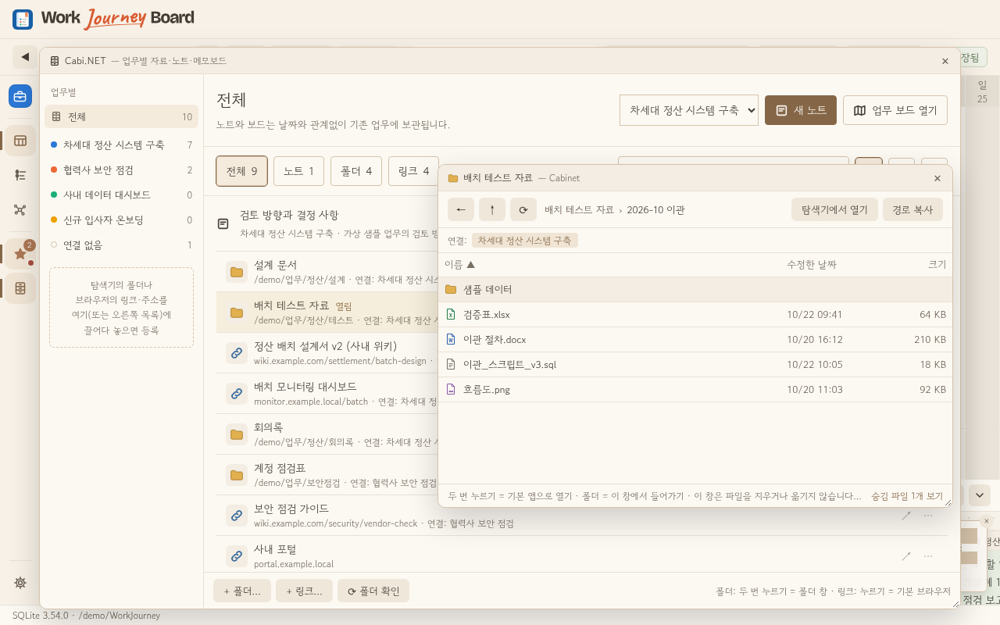
팁
- Cabinet은 폴더를 읽고 열기만 합니다 — 파일을 지우거나 옮기지 않습니다.
- 바탕 화면의 폴더 바로 가기를 끌어 놓아도 가리키는 폴더로 등록됩니다. 왼쪽 업무 목록 폭은 사이 구분선을 끌어 바꿉니다.
- 보드의 업무 이름·항목 옆 🗄를 누르면 연결된 것을 바로 엽니다(여럿이면 Cabinet에서 보여 줌). 열어 둔 창은 다음에 켤 때 다시 열립니다.
장면 12백업과 복원
언제 쓰나요 — 기록을 안전하게 보관하고, 앱·DB 버전을 확인해 복원하거나 오래된 자동 백업을 정리할 때.
- 앱이 시작·종료 시와 내용이 바뀐 2시간 간격으로 일일 백업, 그 달 첫 백업 때 월간 백업을 만듭니다. 업데이트·구조 변경·가져오기 전에도 별도 사본을 남깁니다.
- 설정 › 데이터·백업에서 [지금 백업], 마지막 백업의 생성 앱 버전·DB 구조 번호, 폴더 사용량을 확인합니다. 새 파일명에도 두 버전이 들어 있어 파일 하나만 옮겨도 식별할 수 있습니다.
- [백업 이력·복원]에서 날짜·종류·앱·DB 구조·크기를 확인하고 사본을 선택합니다. 선택하면 실제 DB를 검사합니다. 더 최신 구조·손상·파일명/실제 구조 불일치는 복원을 막고, 구형 구조는 복원 후 갱신할 번호를 알려 줍니다. 과거 백업의 앱 버전은 기록 없음으로 표시합니다.
- [정책 변경]에서 일일 보관을 최근 N일 또는 최신 N개, 월간 보관 개수, 선택적인 폴더 용량 목표로 정합니다. 신규 공간 추천은 최근 30일·월간 12개·용량 목표 끔입니다. 기존 공간의 개수 정책은 그대로 유지합니다.
- [정리 미리보기]로 후보·이유·확보 예상 용량을 확인한 뒤 적용합니다. 용량 기준은 기간 안의 자동 사본도 정리할 수 있습니다. 삭제한 파일은 되돌릴 수 없고, 확인 중 목록이 바뀌면 다시 확인합니다.
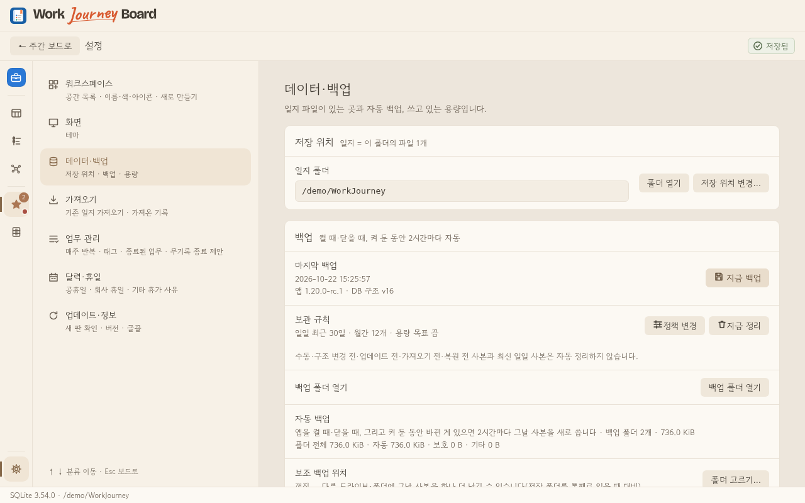
보호되는 사본
- 수동·구조 변경 전·업데이트 전·가져오기 전·복원 전 사본과 최신 정상 일일 사본은 자동 정리하지 않습니다. 보호/기타 파일 때문에 용량 목표를 초과할 수 있습니다. 보호 사본은 [백업 폴더 열기]로 확인해 직접 관리합니다.
- 복원 전에 현재 일지를 별도 사본으로 보존하고, 정상 복원에서는 현재 보관 정책을 유지합니다. 파손 복원으로 정책을 읽을 수 없으면 정책 검토 전까지 자동 삭제를 보류합니다. 새 백업 생성은 계속됩니다.
- 보조 백업 위치는 공간별 별도 폴더에 최근 3개를 유지합니다. 주 폴더 용량 목표에 합산하지 않습니다.
팁
- 일지 파일이 깨졌다고 나오면 시작 화면의 같은 백업 목록에서 복원할 수 있습니다.
- 다른 PC로 옮길 때는 저장 폴더째(
work-journey.db+backups) 복사하면 됩니다. 앱 버전 차이만으로 복원 가능 여부를 판단하지 말고 실제 DB 구조 검사 결과를 확인하세요.
장면 13여러 워크스페이스(회사·개인…)
언제 쓰나요 — 회사 업무와 개인 생활·공부처럼 기록을 완전히 따로 두고 싶을 때. 공간마다 폴더와 일지 파일이 따로라 서로 섞이지 않습니다.
- 왼쪽 레일 맨 위 공간 단추(색 사각형 + 아이콘)를 누르면 워크스페이스 목록이 열립니다. 고르면 그 공간으로 바뀝니다 —
Ctrl+Alt+1(⌥⌘1)~9= n번째 공간,Ctrl+Alt+0(⌥⌘0) = 목록. - 목록의 [+ 새 워크스페이스…] → 4단계: 이름·색·아이콘·용도 → 저장 위치(추천: 지금 공간 폴더 옆) → 첫 업무(용도별 추천, 고쳐도 됨) → 지금 공간에서 가져올 설정(휴일·태그·무기록 알림).
- 지금 어느 공간인지는 공간 단추 아이콘·레일 왼쪽 색 띠·상단 이름·창 제목(
Work Journey Board — 개인)으로 보입니다.
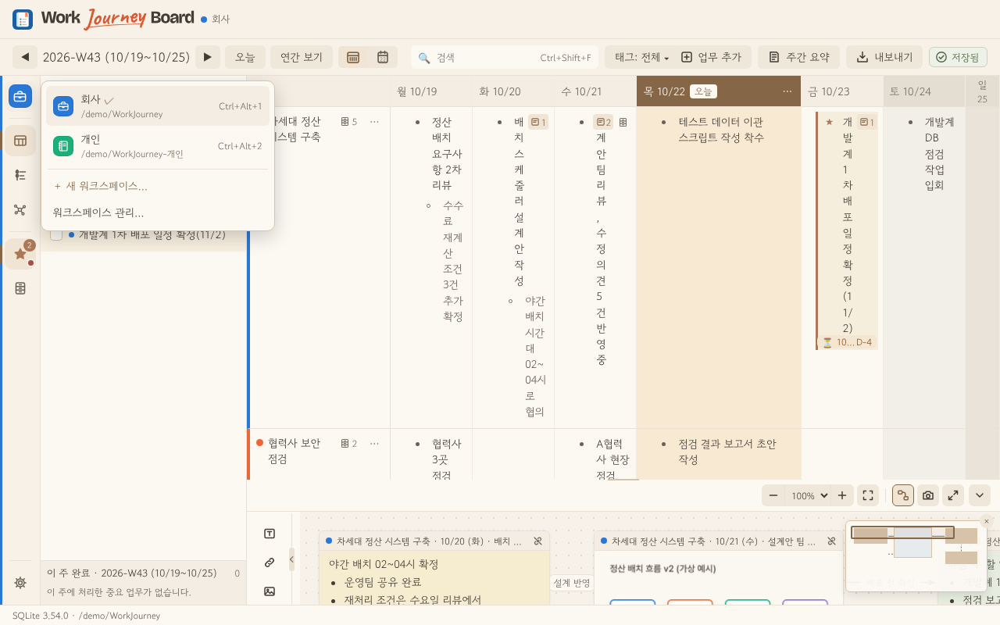
팁
- 설정 › 워크스페이스: 이름·색·아이콘(생산성 도구 모노그램 28개) 바꾸기, ▲▼ 순서(= 단축키 순서), 폴더 열기, 기존 폴더를 워크스페이스로 추가.
- [목록에서 빼기]는 이 PC 목록에서만 빠지고 폴더·파일은 그대로 남습니다. 지금 연 공간은 뺄 수 없습니다.
- 백업은 공간마다 그 폴더의
backups에, 보조 백업 위치는 공간별 하위 폴더에 남습니다. 업데이트 직전에는 등록된 모든 공간을 한 부씩 백업합니다. - 검색·주간 요약·엑셀·인사이트는 지금 연 공간만 다룹니다. 공간이 둘 이상이면 내보낸 파일 이름에 공간 이름이 붙습니다.
- 회사 PC에서 개인 공간을 만들 때는 회사 OneDrive 밖 폴더를 권합니다.
장면 14Universe — 기록과 지식의 연결 지도
언제 쓰나요 — 예전에 비슷한 일을 어떻게 했는지, 이 기록이 어떤 메모·폴더·업무와 이어져 있는지 한눈에 보고 원래 자리로 돌아갈 때.
- 왼쪽 레일 Universe(연결망 아이콘) 또는
Alt+5(⌥5) — 보드에서 커서가 있던 항목이 가운데(초점 보기)에 놓이고, 그 업무·같은 업무의 가까운 기록·연결된 메모 상자·Cabinet 폴더가 둘레에 보입니다. - 별을 선택하고 상단 [상세]를 펼치면 원문과 "왜 이어졌나"(소속·메모에서 연결·Cabinet에서 연결·메모 관계선)가 나옵니다. 두 번 누르면 그 별이 가운데로.
- [원본 열기] — 항목은 보드의 그 칸, 메모 상자는 그 주 메모, Cabinet은 그 줄, 업무는 업무 타임라인으로 갑니다. 다시
Alt+5(⌥5)로 돌아오면 보던 자리 그대로. - [연결하기] — 주를 넘어 다른 기록·메모·업무와 직접 잇습니다. 대상을 찾아(같은 업무·최근 기록이 먼저, 두 글자 이상 치면 검색) 고르고 종류를 정하면 끝 — 관련(방향 없음) · 후속(이 별 다음에 대상) · 근거 · 반대 근거 · 대체(원문은 그대로). 설명은 한 줄(200자)까지 선택.
- [지식 카드로 정리] — 여러 기록에서 얻은 해결법·의사결정·배운 점·업무 길잡이를 카드로 남깁니다. 고른 별이 첫 출처가 되고, [출처 더하기]로 기록·메모·Cabinet을 더 붙입니다(1~50개). 제목·요약·적용 조건·본문을 쓰고 [저장]. 원문은 본문에 복사하지 않고 출처마다 "당시 발췌"로 남습니다.
- [근거에 담기] — 사내 AI에 물어볼 원문을 모읍니다(Universe 상세·보드 항목 메뉴). 위쪽 [근거 묶음 n]으로 서랍을 열고 질문을 적으면, 미리보기가 실제로 복사할 글(지시문 + 원문 + 근거 번호 S1·K1 + 주의)이 됩니다. [사내 AI용 복사] 또는 [Markdown으로 저장…].
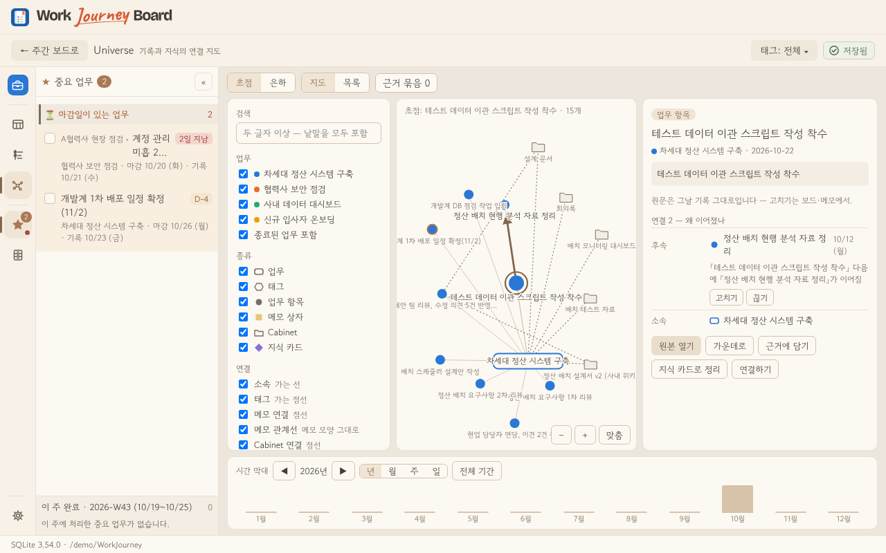
팁
- 위쪽 [초점 | 은하]: 은하 = 모든 기록을 한 화면에(업무가 별자리 중심, 태그가 업무를 잇는 허브). 다이나믹 3D에서는 드래그로 회전·Shift+드래그로 이동합니다. 선택한 별을 향해 휠로 충분히 확대하면 초점으로, 축소하면 은하로 돌아갑니다.
- [지도 | 목록]: 같은 자료를 표로 —
↑/↓로 고르고Enter= 원본 열기. - 바닥 시간 막대: 년 → 월 → 주 → 일로 눌러 들어가면 그 기간만 밝게, [전체 기간]으로 되돌림.
- 상단 [필터]를 펼쳐: 검색(두 글자 이상) · 업무 · 태그 · 종류 · 연결 출처. 워크스페이스가 둘 이상이면 다른 공간도 읽기 전용으로 함께 볼 수 있고, 그 공간 별의 [원본 열기]는 그 공간으로 바꾼 뒤 그 자리로 갑니다.
- 직접 연결은 지도에 굵은 선·화살표로, 상세의 "왜 이어졌나" 맨 위에 "A 다음에 B가 이어짐" 같은 문구로 보입니다. [고치기]로 종류·방향·설명을, [끊기]로 연결만 지웁니다. Universe 안에서
Ctrl+Z(⌘Z) = 직접 연결 작업 되돌리기,Ctrl+Y(⌘Y) = 다시 하기. - 직접 연결은 지금 공간 안에서만 만듭니다(다른 공간 별은 읽기 전용).
- 원문 고치기는 보드·메모에서 — Universe가 고치는 것은 직접 연결·지식 카드뿐입니다.
- 지식 카드 상태: 초안 → 검토함 → 보관. "검토함"은 적용 조건·출처를 확인했다는 표시입니다(사실 보증이 아님). 원문이 바뀌면 카드를 저절로 고치지 않고 출처 옆에 내용 변경·위치 변경·원문 없음을 표시합니다 — [비교]로 당시 발췌와 지금 원문을 나란히 보고 [다시 확인].
- 카드 출처인 보드 항목에는 오른쪽 끝에 ◆ — 누르면 그 카드로. 통합 검색(
Ctrl+Shift+F(⇧⌘F)) 결과에도 카드가 나옵니다. - 근거 묶음은 원문 12,000자·원본 20개까지 — 넘치면 원본을 통째로 빼고 무엇을 뺐는지 보여 줍니다. Cabinet 경로·링크 주소는 기본으로 빼고, 그림은 설명 글만 담습니다. 복사 직전에 원문을 다시 읽어 바뀌었으면 미리보기를 새로 만들고 다시 확인받습니다. 앱은 사내 AI에 보내지 않습니다(복사·파일까지).
- 공간을 바꾸면 근거 묶음은 비워집니다 — 카드·묶음은 지금 공간 원문만.
- 필터·상세 패널은 기본 접힘입니다. 각 버튼·×·Esc로 닫고, 접어도 선택과 필터는 유지됩니다. 좁은 창에서는 한 패널씩 표시합니다.
- [다이나믹 3D / 정적 2D]: 정적은 기존 평면 탐색입니다. 지도는 앱 테마와 별개로 항상 어두운 배경을 사용합니다. OS 모션 감소 설정 또는 3D 미지원 시 정적 모드가 제공됩니다.
- 3D 지도에 포커스한 뒤 방향키로 회전, Shift+방향키로 이동, +/-로 확대·축소, Home으로 전체 보기를 할 수 있습니다.
- 상단 전환은 모노그램 아이콘 버튼입니다. 큐브 / 평면 = 다이나믹 3D / 정적 2D, 조준점 / 궤도 = 초점 / 은하, 지도 / 목록 = 보기 방식입니다. 마우스를 올리면 이름이 표시되고, 선택 상태는 배경과 아래 강조선으로 구별합니다.
- 필터 패널 오른쪽 가장자리, 상세 패널 왼쪽 가장자리를 끌어 너비를 조절합니다. 손잡이에 포커스를 두고 ←/→로 10px씩 조절하고, 두 번 누르면 기본 너비로 돌아옵니다. 너비는 이 PC의 앱 설정에 저장됩니다. 좁은 창에서는 화면 안에 맞춰 제한됩니다.
부록부록 — 단축키·자주 묻는 질문
> 단축키는 Windows 표기 옆 괄호에 macOS 표기를 함께 적었습니다 — 예: Ctrl+Shift+F (⇧⌘F) = 맥 ⇧⌘F(⌘ Command · ⌥ Option · ⇧ Shift · ⌦ fn+delete · ↩ return). 앱 화면의 안내 글은 맥에서 맥 표기로 보입니다.
화면 이동
| 키 | 동작 |
|---|---|
Alt+1 (⌥1) / Alt+2 (⌥2) / Alt+3 (⌥3) / Alt+4 (⌥4) | 보드 / 중요 업무 패널 / 인사이트 / Cabinet(별도 창 열기·닫기) |
Ctrl+Alt+1 (⌥⌘1)~9 · Ctrl+Alt+0 (⌥⌘0) | n번째 워크스페이스로 · 워크스페이스 목록 |
Alt+5 (⌥5) | Universe 열기(커서가 있는 항목이 가운데) / 보드로 |
Ctrl+Z (⌘Z) · Ctrl+Y (⌘Y) (Universe 안) | 직접 연결 작업 되돌리기 · 다시 하기 |
Ctrl+, (⌘,) | 설정 |
Alt+← (⌥←) / Alt+→ (⌥→) · Alt+V (⌥V) | 앞·뒤 주(데일리 뷰는 하루) · 주간 ↔ 데일리 뷰 |
Ctrl+Shift+F (⇧⌘F) · F3 | 검색 · 다음 결과 |
Alt+E (⌥E) | 엑셀 내보내기 |
칸 입력
| 키 | 동작 |
|---|---|
Enter / Shift+Enter (⇧↩) | 새 항목 / 항목 안 줄바꿈 |
Tab / Shift+Tab (⇧⇥) | 세부 ↔ 본 항목 |
Alt+↑ (⌥↑) / Alt+↓ (⌥↓) | 항목 순서 |
Alt+I (⌥I) · Alt+R (⌥R) | 중요 표시 · 매주 반복 |
Alt+O (⌥O) · Alt+U (⌥U) · Alt+D (⌥D) | 시작 시각 · 마감일 · 다른 날로 옮기기(항목 ⋮⋮ · 오른쪽 클릭 메뉴에도) |
Alt+P (⌥P) · Alt+Shift+P (⌥⇧P) | 직전 기록 가져오기(이 칸 · 모든 업무) |
Alt+Delete (⌥⌦) · Ctrl+Z (⌘Z) | 항목 지우기 · 되돌리기 |
메모 도크 경계
| 키 | 동작 |
|---|---|
경계 버튼에 포커스 후 ↑ / ↓ | 메모 높이를 16px씩 조절 |
경계 버튼에 포커스 후 Home | 보드 우선 자동 높이로 복원 |
자주 묻는 질문
- 인터넷이 없어도 되나요? — 네. 새 판 확인(켤 때 1번)만 GitHub에 묻고, 기록·메모는 어디에도 보내지 않습니다.
- 기록은 어디에 있나요? — 처음 고른 저장 폴더의
work-journey.db한 파일입니다. - 윈도우에서 쓰던 일지를 맥으로 옮길 수 있나요? — 네.
work-journey.db파일을 맥으로 복사하고 처음 켤 때 기존 일지 열기로 그 폴더를 고릅니다(파일 형식이 같습니다). Cabinet에 등록한 윈도우 폴더 경로는 맥에 없으니 "폴더 없음" 표시에서 경로 다시 지정을 씁니다. - 새 판은 어떻게 받나요? — 켤 때 새 판이 있으면 위쪽 띠가 알려 줍니다. 설정 › 업데이트·정보에서도 확인·설치합니다(설치 전 자동 백업).